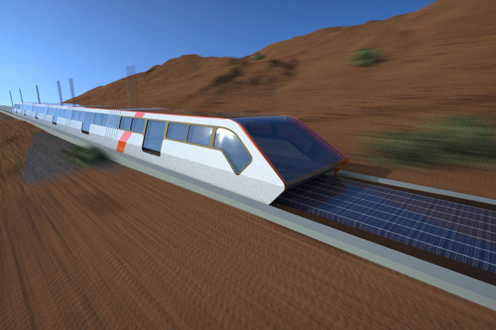
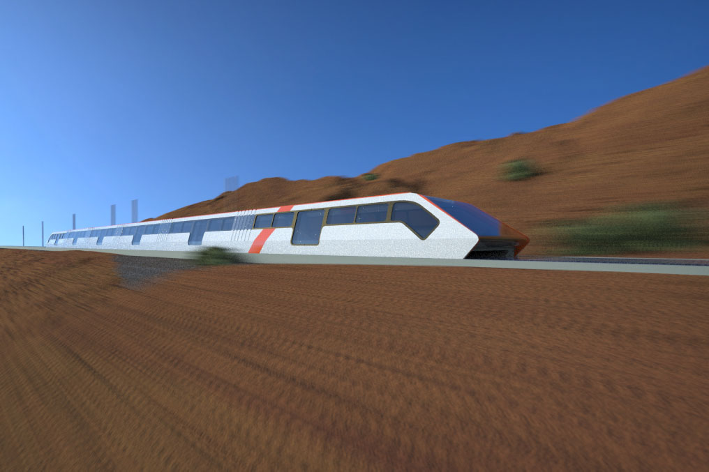
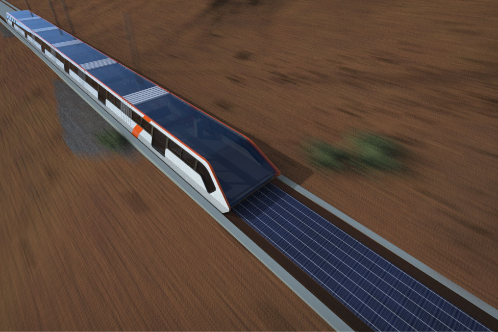

Electromovilidad N°4
El foco principal de esta área de implementación, es generar una conexión interregional debido al cierre de las carreteras a lo largo del país. De este modo, el tren debe ser capaz de suplir el tránsito vehicular actual, considerando transporte tanto de pasajeros como de carga. Considerando una implementación que permita una mayor agilidad e interconexión entre regiones.

Funcionamiento
El proyecto considera el funcionamiento de un tren que utilice la tecnología de levitación magnética (Maglev) para eliminar la fricción producida por los rieles y poder alcanzar altas velocidades con una mínima generación de ruido. La idea es que este medio de transporte se extienda a lo largo de todo el país, para otorgar un fácil movimiento en este mismo. La capacidad de este sistema para moverse en velocidades de aproximadamente 600kh/h permite que se generen tramos entre ciudades en cuestión de minutos, mejorando la accesibilidad y permitiendo una descentralización en Chile, ya que no será necesario vivir en Santiago para poder acceder a los beneficios de esta ciudad.

Para la construcción de este vehículo, se considera la utilización de vidrio laminado con el fin de aumentar la seguridad y la integridad del tren en su parte anterior en caso de cualquier tipo de colisión. El chasis sería una estructura de acero montada sobre un sistema de imanes que trabaja en conjunto con las vías. Con respecto a estas últimas, si bien, la parte exterior es de concreto, en su interior contienen un sistema eléctrico, que a su vez es alimentado por paneles solares que se posicionan en la parte central de los rieles. Por otro lado, el ancho del tren es de 6 metros, esto debido a que como es un sistema que reemplazará el transporte por carreteras, se debe hacer cargo del transporte de bienes, y es por la medida de un container maritimo estibado de manera lateral, por la que se definen las dimensiones del tren. 
Con la velocidad que alcanza el tren, frenar en todas las estaciones se convierte en un contratiempo, por lo que algunos de los vagones cuentan con cápsulas/estacionamientos para drones, los cuales podrán despegar y aterrizar en pleno movimiento del tren, considerando una desaceleración para poder llevar a cabo este procedimiento. Además, teniendo en cuenta la velocidad de movimiento, un conductor no sería eficiente porque no sería capaz de reaccionar a tiempo en caso de cualquier inconveniente, por lo que todos los trenes serían controlados desde una central. Por último, los tipos de vagones que lelvaría serían: De pasajeros, Módulos de dron, y de carga(donde se llevarían containers).
En el siguiente recuadro podrá observar con detalle la estructura que conforma este paso del proyecto.